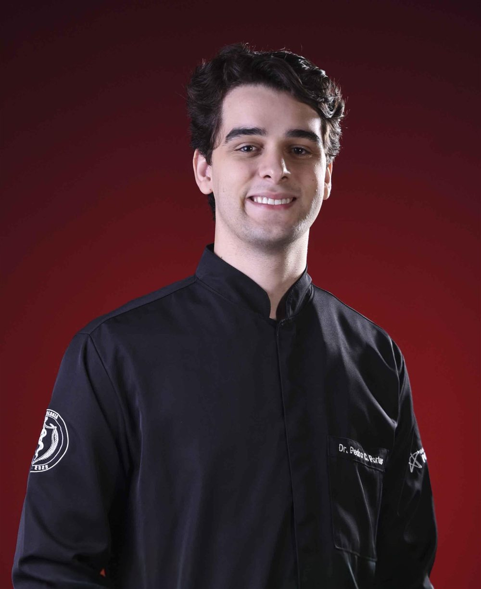
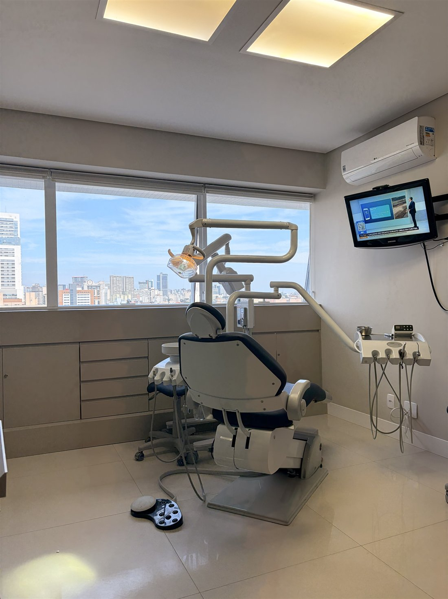
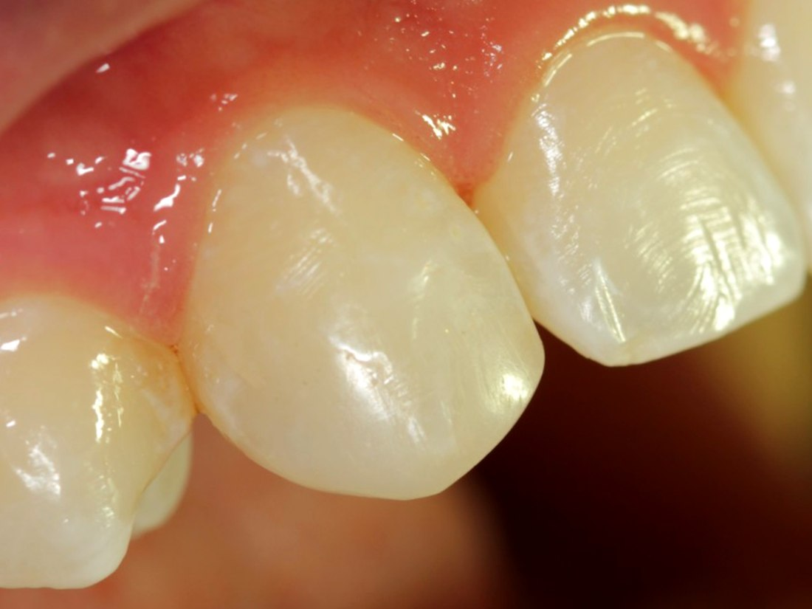
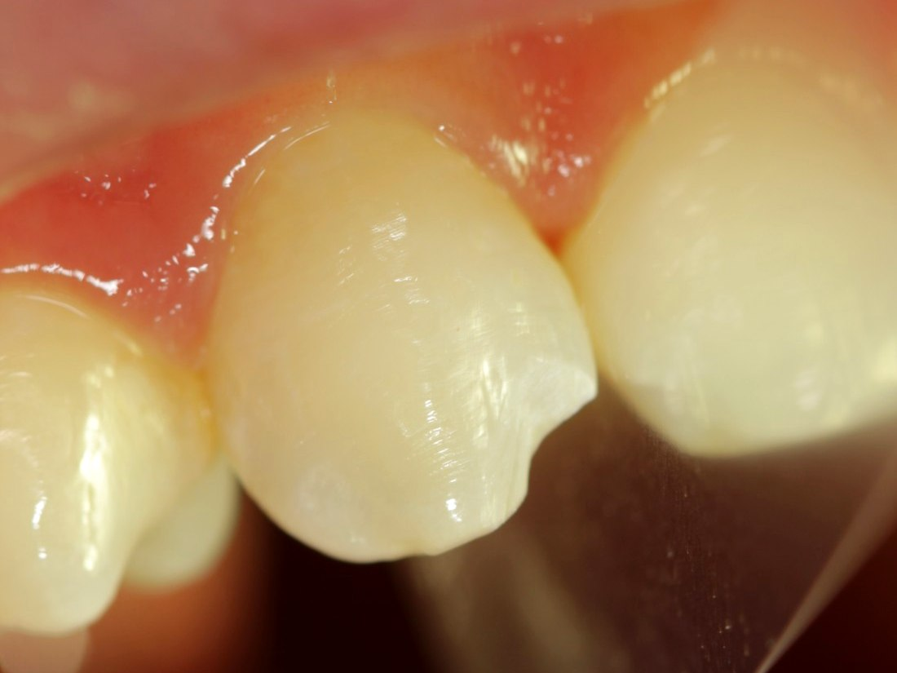
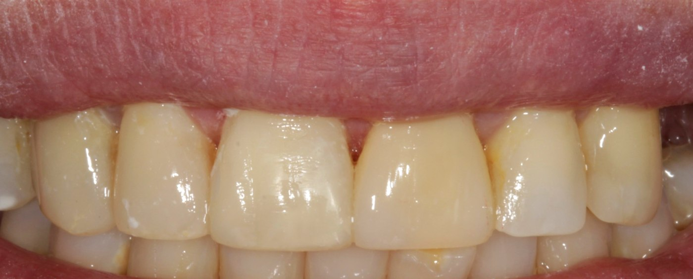
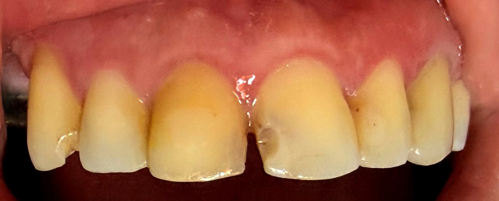
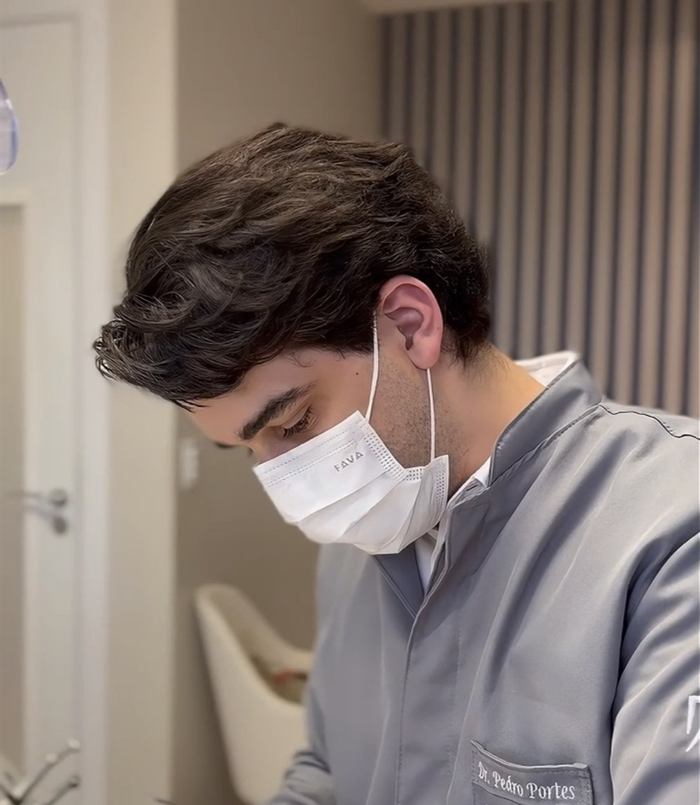

Odontologia com ciência, precisão e arte.
Atendimento individualizado em Curitiba.
Quero uma avaliação Dr. Pedro Portes · Cirurgião-Dentista · CRO-PR 39911
Clínica geral
Cuidado completo: avaliação detalhada, limpeza, restaurações e revisões. Cada consulta começa com uma conversa e termina com um plano claro, explicado etapa por etapa.


AntesDepoisArraste a seta para comparar
Estética
Restaurações e resinas feitas com técnica biomimética, que reproduz a estrutura natural do dente. Forma, cor e textura planejadas para um resultado que não pareça "feito", e sim seu.


AntesDepoisArraste a seta para comparar
Prótese e reabilitação
Planejamento para devolver forma, função e conforto a dentes muito destruídos ou ausentes. Cada etapa é pensada para que o resultado seja duradouro e se integre ao seu sorriso.
Atendimento integrado
Seu sorriso é visto por inteiro, e não dente por dente. Quando o caso pede, o diagnóstico e o planejamento são feitos em conjunto com dentistas de outras áreas e com profissionais da saúde, como médicos, fisioterapeutas e fonoaudiólogos. Assim, o tratamento olha para a causa, e não só para o sintoma, do primeiro exame ao último retorno.
Tratamentos

Sobre o Dr. Pedro
Diagnóstico preciso antes de qualquer procedimento. Esse é o princípio que guia cada plano de tratamento: técnica apurada, decisões baseadas em evidência científica e olhar estético em cada detalhe.
Formado em Odontologia pela Universidade Positivo, o Dr. Pedro Portes cursa especialização em Prótese Dentária. Realizou aperfeiçoamento em Cirurgia Oral Menor e em Endodontia, além de cursos de resinas compostas em dentes anteriores.
Agende sua consulta
Pelo WhatsApp você tira qualquer dúvida e combina o melhor horário.
Quero uma avaliação